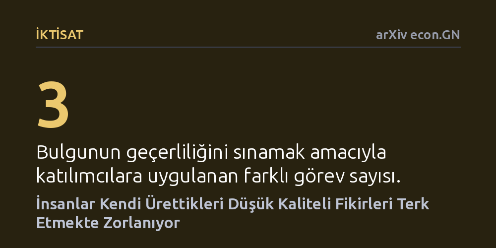

IKTISAT · arXiv econ.GN · 2026-09-08
Araştırmacılar, fikir üretme eyleminin bu fikirleri seçme sürecini nasıl etkilediğini teşvik uyumlu deneylerle inceledi. Katılımcıların, sadece kaliteli fikirler ödüllendirildiği halde, kendi ürettikleri düşük kaliteli fikirleri başkalarınınkine kıyasla daha yüksek oranda seçtiği bulundu.
Yaratıcı süreçlerdeki başarısızlığın temel nedeninin kötü fikir üretmekten ziyade, kişinin kendi fikrine geliştirdiği sahiplik bağı yüzünden zayıf alternatifleri eleyememesi olduğunu gösterir.

Yaratıcılık üzerine yapılan araştırmalar çoğunlukla sürecin ilk aşamasına, yani zihni serbest bırakıp çok sayıda yeni ve özgün fikir üretmeye odaklanır. Ancak bir girişimin, ürün tasarımının veya sanatsal çalışmanın nihai başarısı yalnızca akla gelen fikirlerin bolluğuna değil; bu fikirlerin hangilerinin elenip hangilerinin hayata geçirileceğine bağlıdır. İkinci aşama olan fikir seçimi doğru işletilmediğinde, ekipler zayıf projelerin peşinde büyük zaman, enerji ve sermaye israfına sürüklenir.
Buradaki temel soru, bir fikri bizzat üretmiş olmanın o fikrin kalitesini nesnel bir gözle değerlendirmemizi engelleyip engellemediğidir. İktisat ve psikoloji literatüründe fiziksel nesneler için çok iyi bilinen sahiplik etkisi, zihinsel ürünlerimiz için de geçerli olabilir. Eğer bireyler kendi ürettikleri fikirlere sırf kendilerine ait olduğu için gereğinden fazla değer biçiyor ve onları bırakamıyorsa, yaratıcı sürecin kalite kontrol mekanizması daha baştan sakatlanmış demektir.
Araştırmacılar bu durumu ölçmek amacıyla katılımcı çiftlerinin yer aldığı teşvik uyumlu bir deney kurguladı. Katılımcılar belirli problemler için fikirler üretti; ardından her katılımcıya hem kendi ürettiği hem de eşinin ürettiği fikirlerin bulunduğu havuz sunuldu. Katılımcılara yalnızca objektif olarak yüksek kaliteli fikirleri seçip sunduklarında ödüllendirilecekleri bildirildi; böylece düşük kaliteli fikirleri seçmenin doğrudan maddi bir maliyeti oluşturuldu.
Deney, sonuçların genellenebilirliğini doğrulamak amacıyla iki farklı alanda ve toplam üç ayrı görevde tekrarlandı. Ayrıca araştırmacılar, katılımcılara bu önyargıya düşebileceklerini önceden hatırlatan bilgilendirici bir uyarının seçiciliği artırıp artırmayacağını ve fikirlerin üzerinden zaman geçmesinin değerlendirmeyi nasıl etkilediğini test etti.
Deney sonuçları, insanların kendi fikirlerini seçerken kalite çıtasını belirgin biçimde düşürdüğünü ortaya koydu. Katılımcılar başkalarının ürettiği fikirleri değerlendirirken zayıf olanları kolaylıkla elerken, kendi fikirleri arasından seçim yaparken önemli ölçüde daha fazla düşük kaliteli fikri üst aşamaya sundu. Yazarlar bu olguyu 'Yaratıcı Sahiplik Etkisi' olarak adlandırdı.
Çalışmanın en dikkat çekici bulgularından biri, bu etkinin doğrudan uyarılara karşı dirençli olmasıydı; katılımcılara kendi fikirlerine duygusal olarak bağlanmamaları gerektiği açıkça söylendiğinde dahi seçimlerindeki kalite düşüşü engellenemedi. Buna karşın, katılımcılar ürettikleri fikirleri birkaç ay sonra tekrar incelediklerinde seçiciliklerinin belirgin şekilde arttığı görüldü. Araya giren zaman, fikir üzerindeki kişisel sahiplik duygusunu hafifleterek tarafsız bir değerlendirme yapılmasını sağladı.
Bu bulgular, şirketlerin ve yaratıcı profesyonellerin çalışma biçimlerini gözden geçirmeleri gerektiğini gösteriyor. Bir ekibe hem fikir üretme hem de üretilen fikirleri seçip onaylama yetkisi aynı anda verildiğinde, çalışanların vasat fikirleri savunup projeyi çıkmaza sokması kuvvetle muhtemel bir psikolojik tuzaktır. Kurumların fikir üretimi ile fikir eleme aşamalarını birbirinden bağımsız ekiplere devretmesi rasyonel bir yönetim kuralı haline gelmektedir.
Bireysel düzeyde çalışan yaratıcılar içinse en sağlıklı yöntem, üretilen fikirlerin üzerine hemen karar vermeyip süreci zamana yaymaktır. Fikirlerin zihinde soğumasına izin vermek ve haftalar ya da aylar sonra onlara yeniden bakmak, kişinin kendi üretimine tıpkı bir yabancının gözüyle eleştirel yaklaşabilmesini mümkün kılmaktadır.